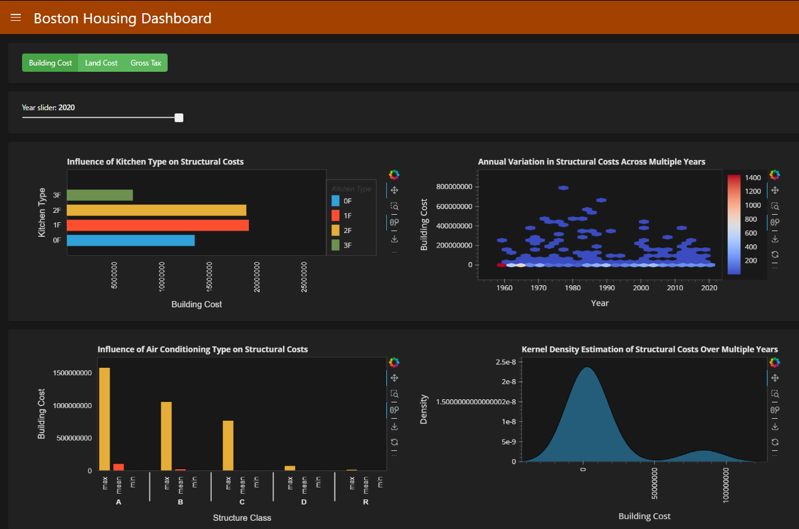
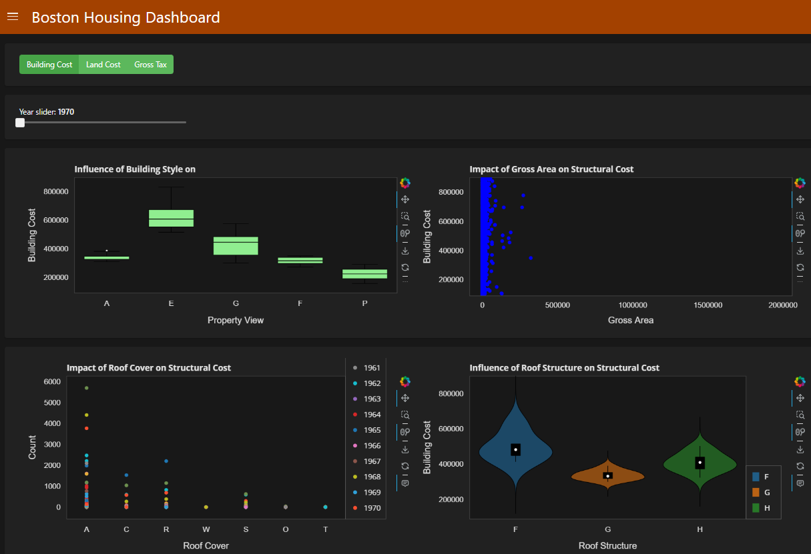
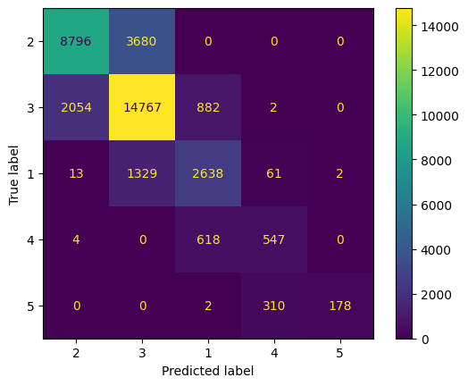
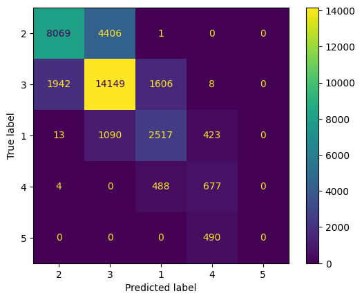
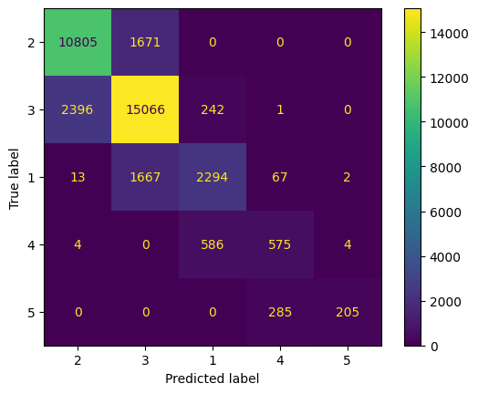
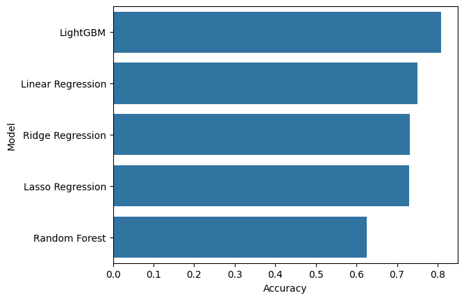

Boston Housing Dataset
Introduction
Boston, a city known for its rich history and academic presence, has a complex and dynamic real estate market. To explore this complexity, we analyzed the Boston Housing Dataset, which consists of 177,091 individual records and 63 attributes of data. This dataset provides an extensive view of the many factors influencing Boston’s housing market, making it an invaluable resource for data-driven insights.

Exploratory Data Analysis (EDA)
To visualize and analyze the data, we utilized Bokeh, a powerful interactive visualization library. By launching the Bokeh server, we created interactive visualizations that helped us uncover hidden patterns and trends in Boston's housing market.
 Predictive Analytics
We employed several machine learning models to predict key real estate features and property values:
Linear Regression

Random Forest

LightGBM Regression

The analysis carefully selected features using Variance Inflation Factor (VIF) to minimize multicollinearity while capturing diverse property aspects such as kitchen details, location, building type, exterior condition, bathroom style, HVAC systems, and property tax.
Key Findings and Impact
The LightGBM model emerged as the top performer, achieving an impressive 80.87% accuracy in predicting the target variable. This high accuracy demonstrates the model's effectiveness in understanding the complex dynamics of Boston's housing market.
This project highlights the importance of data-driven decision-making in real estate. By leveraging predictive analytics and robust data handling techniques, we provided a comprehensive view of Boston's housing market, aiding potential buyers, investors, and city planners in making informed decisions.
Conclusion
The Boston Housing Dataset project serves as an excellent addition to any data science portfolio, showcasing skills in data engineering, machine learning, predictive analytics, and data visualization. It emphasizes the significance of combining historical data with modern analytical techniques to gain actionable insights into one of the most challenging real estate markets in the United States.